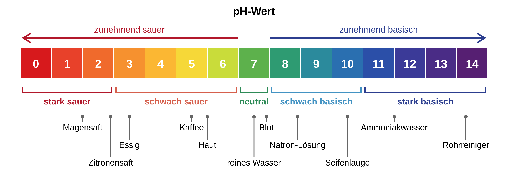

So nutzen Sie die Hilfen: Versuchen Sie es erst allein. Öffnen Sie dann Hilfe 1, danach Hilfe 2. Die Lösung dient zur Kontrolle – vergleichen Sie sie mit Ihrer eigenen Antwort und verbessern Sie diese.
Aufgabe 1: Hypothese
Stellen Sie eine Hypothese auf!
Hilfe 1
Vergleichen Sie die Zutaten der beiden Rezepte. Welche Zutat kommt nur in Rezept 1, welche nur in Rezept 2 vor?
Hilfe 2
Essig schmeckt sauer, Natron wird gegen Sodbrennen eingesetzt (basisch).
Lösung (erst nach eigenem Versuch öffnen!)
Essig (sauer) färbt den Kohl rot, Natron (basisch) färbt ihn blau.
Aufgabe 2: Rotkohlsaft als Indikator
Überprüfen Sie Ihre Hypothese und erklären Sie den Farbwechsel!
Hilfe 1
Ordnen Sie die Lösungen aus der Tabelle in sauer, neutral und basisch ein. Welche Farbe gehört jeweils dazu?
Hilfe 2
Rotkohl enthält Farbstoffe (Anthocyane). Lesen Sie den Merkkasten „Indikatoren“.
Lösung (erst nach eigenem Versuch öffnen!)
sauer → rot, neutral → violett, basisch → blau bis grün. Die Anthocyane im Rotkohl sind Indikatoren: Ihre Farbe hängt vom pH-Wert ab. Rezept 2 (Essig) = Rotkohl, Rezept 1 (Natron) = Blaukraut.
Aufgabe 3: pH-Skala
Ordnen Sie die Stoffe auf der pH-Skala zu!
Hilfe 1
Die pH-Werte stehen in der Aufgabe. Suchen Sie die passende Zahl auf der Skala.
Lösung (erst nach eigenem Versuch öffnen!)

Aufgabe 4: Universalindikator
Geben Sie pH-Wert und Charakter an!
Hilfe 1
Vergleichen Sie die Farben mit Abb. 1. Unter der Skala stehen die Bereiche stark/schwach sauer, neutral, schwach/stark basisch.
Lösung (erst nach eigenem Versuch öffnen!)
A rot: pH 0–2, stark sauer · B gelb: pH 5–6, schwach sauer · C grün: pH 7, neutral · D blaugrün: pH 9, schwach basisch · E violett: pH 13–14, stark basisch
Aufgabe 5 (★ Wahl): Natron und empfindliche Mägen
Erklären Sie die Aussage mithilfe der pH-Skala!
Hilfe 1
Welchen pH-Wert hat Natron-Lösung, welchen der Magensaft?
Lösung (erst nach eigenem Versuch öffnen!)
Natron-Lösung ist schwach basisch (pH ≈ 8), Magensaft stark sauer (pH 1–2). Natron macht den Kohl weniger sauer, er reizt den Magen weniger.